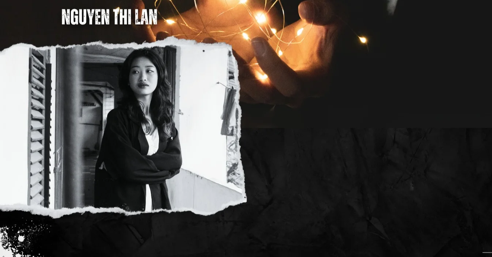
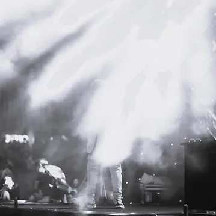
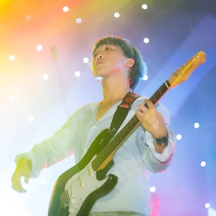
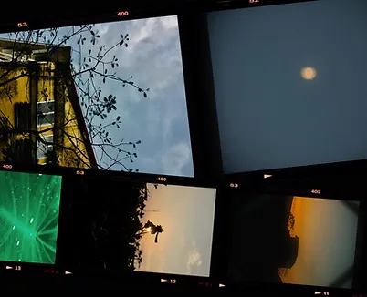
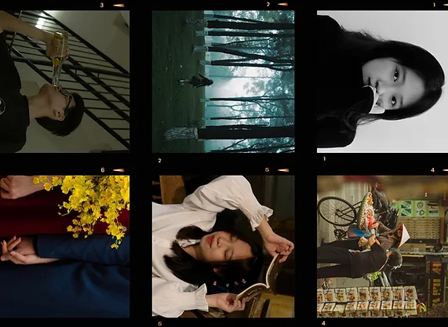
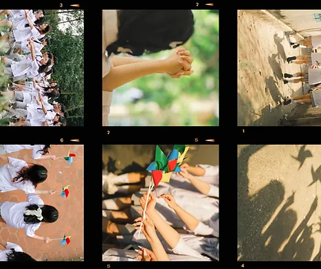

+890971209812



Giới thiệu
Bạn đã từng rung động trước một khung cảnh nào đó chưa? Hình ảnh ánh nắng chiếu qua những hàng cây xuống mặt đường xe cộ đi lại vào tiết trời thu dễ chịu, hay cánh chim bồ câu tung cánh dưới ngọn cờ đỏ sao vàng bay trong gió hoặc đơn giản chỉ là hình ảnh đôi bạn già cùng nhau ngồi trên ghế đá bên hồ nhìn ngắm mọi thứ xung quanh… Với mong muốn lưu giữ lại những cảm xúc đó trong từng bức ảnh, tôi không ngừng học hỏi để biến những bức ảnh đó thành từng trang nhật ký cảm xúc - một nhân chứng cho vẻ đẹp và sự sống động của cuộc sống.
Kỹ năng
Nhiếp ảnh
Vẽ tranh
Ca hát
Trang trí
Du lịch
Sở thích
Nhiếp ảnh và hậu kỳ
Thiết kế đồ họa cơ bản (sử dụng Photoshop,
Lightroom, After Effects, Illustrator, Canva)
Học hỏi nhanh và dễ dàng thích nghi với môi
trường mới
Nguồn cảm hứng
“Nguồn cảm hứng của tôi không chỉ nằm ở vẻ đẹp hiển hiện của tự nhiên hay những bức ảnh với bố cục theo khuôn khổ. Đó còn là việc tìm kiếm và khám phá những góc nhìn mới lạ, những khoảnh khắc đời thường mà bị con người ta lãng quên. Tôi cố gắng nhìn thế giới qua một lăng kính khác - nơi mỗi dãy núi khu rừng sương mù không chỉ là một phong cảnh, mà còn mang trong nó những cảm xúc riêng với màu sắc khác biệt. Nụ cười của con người trong ảnh của tôi không chỉ là thể hiện sự vui vẻ, mà còn là sự chia sẻ, là sự kết nối giữa người với người. Mỗi bức ảnh tôi chụp đều mang một thông điệp riêng, một cái nhìn sâu sắc và độc đáo về thế giới xung quanh chúng ta.”
Câu chuyện
Tất cả bắt đầu vào những năm 2019, khi tôi bắt đầu chụp ảnh phong cảnh nghệ thuật bằng chiếc iPhone 6 của mình. Từ những bức ảnh đơn giản nhưng lại mang đến cho người xem những rung cảm khác lạ , tôi cảm nhận được sức mạnh của nhiếp ảnh - khả năng lưu giữ. Mỗi khoảnh khắc được lưu giữ lại thông qua ống kính đã làm trái tim tôi rung động. Ánh chiều tà trên cánh đồng, vẻ đẹp vô tư của trẻ con nô đùa trên đê, hay thậm chí là những giọt nước mưa rơi trên lá cây... Tất cả đều trở nên sống động và đầy cảm xúc trong mắt tôi, một cô bé 17 tuổi không biết gì về bố cục và quy tắc của nhiếp ảnh...(xem thêm)


2019-2021
Bắt đầu với chiếc iPhone 6, tôi chụp những bức ảnh phong cảnh đầu tiên, ngẫu hứng nhưng mang trong đó là những xúc cảm riêng. Tôi đã bắt đầu có sự thích thú với việc lưu giữ những khoảnh khắc đẹp đẽ qua ống kính, nhưng lúc đó, tôi chưa hiểu hết sức mạnh của cảm xúc trong nhiếp ảnh, thứ cảm xúc thôi thúc tôi cầm máy lên chụp lại giống như sự hào hứngkhi nhìn thấy món đồ chơi mới lạ lần đầu được tiếp xúc vậy.

2022-2023
Tham gia CLB nhiếp ảnh ở Đại học, tôi đã mở rộng kiến thức và kỹ thuật chụp ảnh, từ chân dung đến sự kiện, đường phố và báo chí, nhưng cũng có lúc cảm xúc của tôi bị chững lại, khiến tôi tự hỏi lý do mình cầm máy ảnh là gì. Tôi đã dành thời gian để suy ngẫm và tìm lại nguồn cảm hứng, để mỗi bức ảnh chụp không chỉ là một công việc mà là một tác phẩm nghệ thuật chứa đựng cảm xúc và ý nghĩa.
Cuối 2023:Tôi đã thành thạo chụp ảnh chân dung và sự kiện, bắt đầu nhận các công việc chụp ảnh đầu tiên và tạo ra những sản phẩm cá nhân. Cũng từ đó tôi bắt đầu nhận ra rằng mỗi khoảnh khắc tôi lưu giữ không chỉ là hình ảnh, mà còn là cảm xúc và câu chuyện đằng sau nó. Tôi tìm thấy lại thứ cảm xúc với nhiếp ảnh tưởng chừng bị chững lại đó, nó trở thành một thứ cảm xúc khác - giống như sự cháy bỏng với đam mê, là hết mình trên con đường phát triển của bản thân.

2024 - Hiện tại
Thử sức với thể loại Kỷ yếu - lưu giữ những thước phim thanh xuân tại Aloha Kỷ yếu, tôi không chỉ dừng lại ở việc là một thợ chụp ảnh, mà còn cố gắng tạo ra cảm xúc và lưu giữ những kỷ niệm quý giá. Tôi đã học cách khơi gợi và bắt lấy những cảm xúc đó, để mỗi bức ảnh kỷ yếu không chỉ là cho có, cho đủ mà mỗi khi nhìn lại chúng ta cảm nhận được sự nhiệt huyết, thanh xuân rực cháy từng trải qua.

Bộ sưu tập

Vào hè
- Em có biết giữa em và mùa hạ có một điểm chung là gì không?
- Là đều dịu dàng, ấm áp, đẹp đẽ làm người ta say đến nao lòng
Những ánh nắng buổi sớm mai của mùa hạ đẹp nhẹ nhàng như ánh mắt em - ánh mắt cô gái tuổi đôi mươi. Vì có em mà nơi đây thêm tình, thêm đẹp như một bức tranh.